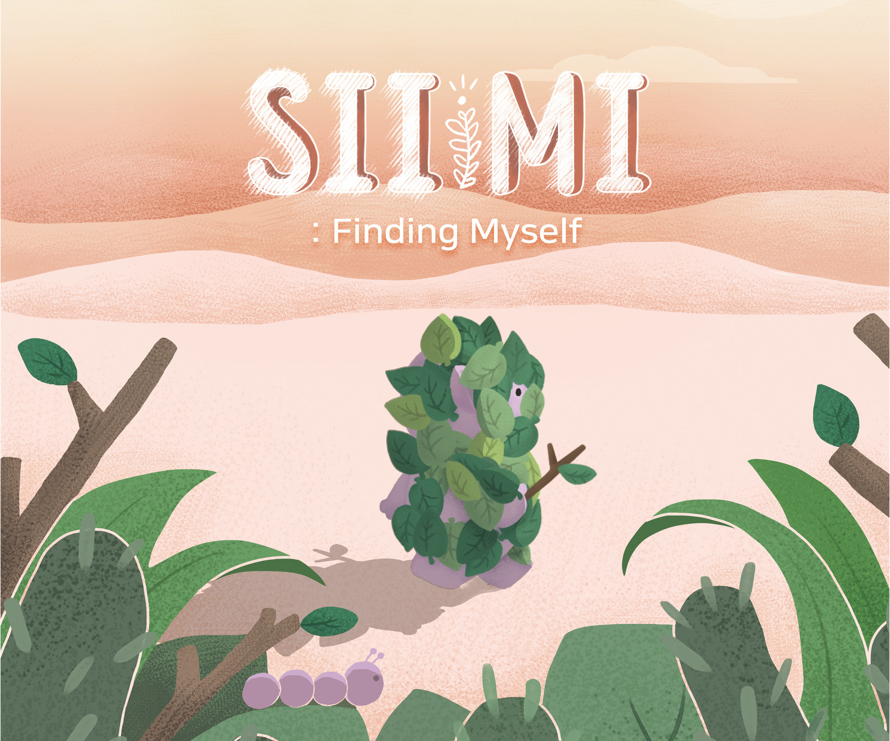

진짜 ‘나’를 찾는 시미(SIIMI)의 여정을 담은 어드벤처 게임
SIIMI는 외모지상주의 사회에서 만들어지는 잘못된 기준을 경계하기 위해 제작한 단서 조합형 나뭇잎 털기 게임입니다. 주인공 시미(SIIMI)는 아름다워야 가치 있는 세상에서 아름답지 않아도 될 자신을 꿈꿉니다.
시미의 작은 움직임이 세상을 변화시키는 파도가 될 수 있을까요?
| 제작 | 가격 | 플랫폼 |
GamBridzy Inc. 팀 GOINDOL 김해인 김지원 이소정 조현아 이경현 박종창 | Android : 1,000원 iOS : 1,200원 | AndroidiOS |
'진짜 나'를 주제로 한 포인트앤클릭 게임. 미종족은 나뭇잎으로 외관을 꾸미는 것을 중요하게 여기지만 주인공 시미는 이것에 의문을 품고 몸에 붙은 나뭇잎을 전부 털어내기 위해 모험을 떠난다. 이러한 주인공의 행보는 탈코르셋의 은유로도 볼 수 있다.
남들의 시선에 상관없이, 자기 자신을 사랑하기 위한 스토리
각자의 사연을 지닌 다양한 캐릭터들.
광활하지만 따뜻한 사막의 풍경을 담은 그래픽.
가슴을 울리는 서정적인 사운드.
사막에서 시미와 함께 자신을 찾는 여행을 떠나주세요.
시미(SIIMI)는 사막의 마을에 사는 미(MI)종족입니다. 미(MI)들은 신성한 나무 위그드라미와 살아가는 생명체들로 이들은 위그드라미를 따라하며 외적으로 더 나은 존재가 되기를 항상 꿈꿉니다. 하지만 꾸밈 실력이 서투른 시미는 마을에서 따돌림을 받게 됩니다. 아무리 노력해도 따라갈 수 없는 기준에 지친 시미. 더 이상 위그드라미처럼 보이는데 애쓰지 않기로 결심하고 진짜 자신을 찾기 위해 마을을 떠나게 됩니다.
사막의 끝에서 시미는 어떠한 결말을 맞이하게 될까요?